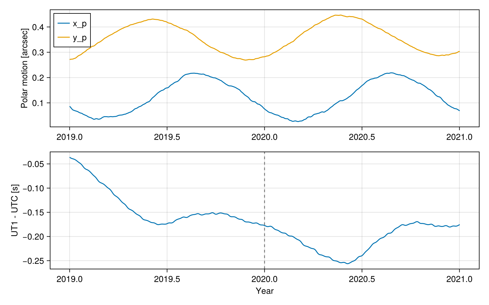
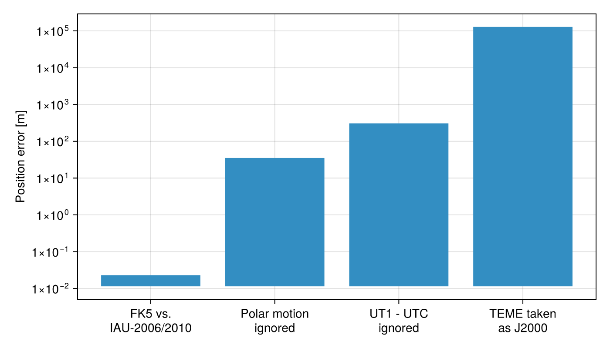

GPS State Vector: ITRF to GCRF
In this tutorial, we will convert a satellite state vector from the International Terrestrial Reference Frame (ITRF) to the Geocentric Celestial Reference Frame (GCRF) using the Earth Orientation Parameters (EOP). This is the conversion we must perform, for example, when we receive precise orbit products of GNSS satellites, which are represented in the ITRF, and we want to use them in orbit dynamics, which are naturally described in an inertial frame.
Theory
The ITRF is an Earth-Centered, Earth-Fixed (ECEF) frame that rotates with the Earth's crust. The GCRF is an Earth-Centered Inertial (ECI) frame whose axes are fixed with respect to distant quasars. Converting from one to the other requires modeling the Earth's orientation in space, which has a predictable part (precession and nutation) and an irregular part that must be measured and distributed by the IERS (International Earth Rotation and Reference Systems Service) as the EOP.
The IAU-76/FK5 theory decomposes the rotation as:
\[\begin{equation*} \vec{r}_{GCRF} = \left[P\right] \left[N\right] \left[R\right] \left[W\right] \vec{r}_{ITRF}~, \end{equation*}\]
where $\left[W\right]$ is the polar motion, which depends on the EOP $x_p$ and $y_p$, $\left[R\right]$ is the Earth rotation about the celestial intermediate pole, which depends on the Greenwich apparent sidereal time and, hence, on the UT1 time scale, $\left[N\right]$ is the nutation, corrected by the EOP $\delta\Delta\psi$ and $\delta\Delta\epsilon$, and $\left[P\right]$ is the precession.
The IAU-2006/2010 theory using the CIO (Celestial Intermediate Origin) approach decomposes the same rotation as:
\[\begin{equation*} \vec{r}_{GCRF} = \left[Q\right] \left[R_3\left(-ERA\right)\right] \left[W\right] \vec{r}_{ITRF}~, \end{equation*}\]
where $ERA$ is the Earth rotation angle, a linear function of UT1, and $\left[Q\right]$ depends on the coordinates $X$ and $Y$ of the celestial intermediate pole, corrected by the EOP $\delta X$ and $\delta Y$.
Both theories require the time scale UT1, which follows the irregular rotation of the Earth. It is related to UTC by the EOP $\Delta UT1$:
\[\begin{equation*} UT1 = UTC + \Delta UT1~, \qquad TAI = UTC + \Delta AT~, \qquad TT = TAI + 32.184~\mathrm{s}~, \end{equation*}\]
where $\Delta AT$ is the accumulated number of leap seconds. The terrestrial time (TT) is the time scale used to evaluate precession and nutation.
Finally, an observer in the rotating frame measures a different velocity than an observer in the inertial frame. If $\left[D\right]$ is the rotation matrix from ITRF to GCRF, the velocity transforms as:
\[\begin{equation*} \vec{v}_{GCRF} = \left[D\right] \left(\vec{v}_{ITRF} + \vec{\omega}_\oplus \times \vec{r}_{ITRF}\right)~, \end{equation*}\]
where $\vec{\omega}_\oplus$ is the Earth's angular velocity, whose magnitude is also corrected by the EOP length of day (LOD).
We can estimate the position error caused by ignoring $\Delta UT1$ by noticing that the Earth rotates by an angle $\omega_\oplus \Delta UT1$ during that interval. Hence, a point at distance $r$ from the Earth's center and geocentric latitude $\phi$ is displaced by:
\[\begin{equation*} \delta r \approx \omega_\oplus \, \Delta UT1 \, r \cos\phi~. \end{equation*}\]
Algorithm
We need to perform the following tasks to convert the state vector:
- Fetch the EOP for both theories;
- Inspect the EOP at the desired epoch and derive the time scales UT1 and TT;
- Build the state vector in the ITRF;
- Convert it to the GCRF using both theories and compare the results;
- Quantify the error of ignoring the EOP; and
- Verify the conversion with a round trip.
Code
Before starting, let's load all the packages in the SatelliteToolbox.jl ecosystem together with the auxiliary packages used in this tutorial:
using SatelliteToolbox
using CairoMakie
using LinearAlgebra
using PrintfThe package SatelliteToolboxTransformations.jl can download and parse the EOP files distributed by the IERS. The IAU-76/FK5 theory uses the file finals.all.csv, whereas the IAU-2006/2010 theory uses finals2000A.all.csv. The function fetch_iers_eop downloads the file to a scratch space and returns a structure with the interpolated parameters:
eop_iau1980 = fetch_iers_eop(Val(:IAU1980))
eop_iau2000a = fetch_iers_eop(Val(:IAU2000A))The downloaded files are reused for 7 days. If a fresh copy is required, pass the keyword force_download = true.
This concludes the first step of the algorithm.
Each field of the EOP structure is a callable interpolation evaluated at the Julian Day [UTC]. Let's fix our epoch at the beginning of 2020 and inspect the parameters:
jd_utc = date_to_jd(2020, 1, 1, 0, 0, 0)
@printf("x_p = %+.6f arcsec\n", eop_iau1980.x(jd_utc))
@printf("y_p = %+.6f arcsec\n", eop_iau1980.y(jd_utc))
@printf("UT1-UTC = %+.6f s\n", eop_iau1980.Δut1_utc(jd_utc))
@printf("LOD = %+.6f ms\n", eop_iau1980.lod(jd_utc))
@printf("δΔψ = %+.6f mas\n", eop_iau1980.δΔψ(jd_utc))
@printf("δΔϵ = %+.6f mas\n", eop_iau1980.δΔϵ(jd_utc))x_p = +0.076577 arcsec
y_p = +0.282336 arcsec
UT1-UTC = -0.177155 s
LOD = +0.437900 ms
δΔψ = -108.252000 mas
δΔϵ = -6.403000 masThe polar motion has an amplitude of a few tenths of an arcsecond and the difference between UT1 and UTC stays within $\pm 0.9$ s, which is enforced by the leap seconds. We can plot them for a two-year window around our epoch to visualize their behavior:
vjd = date_to_jd(2019, 1, 1, 0, 0, 0):1:date_to_jd(2021, 1, 1, 0, 0, 0)
vyear = 2019 .+ (vjd .- vjd[1]) ./ 365.25
fig = Figure(size = (800, 500))
ax1 = Axis(fig[1, 1]; ylabel = "Polar motion [arcsec]")
lines!(ax1, vyear, eop_iau1980.x.(vjd); label = "x_p")
lines!(ax1, vyear, eop_iau1980.y.(vjd); label = "y_p")
axislegend(ax1; position = :lt)
ax2 = Axis(fig[2, 1]; xlabel = "Year", ylabel = "UT1 - UTC [s]")
lines!(ax2, vyear, eop_iau1980.Δut1_utc.(vjd))
vlines!(ax2, [2020.0]; color = :gray, linestyle = :dash)
fig
The interpolation is linear inside the tabulated span and constant outside it. Hence, evaluating the EOP far from the available data silently returns the last tabulated value instead of throwing an error.
The package also provides the functions to obtain the time scales from UTC. The function get_Δat returns the accumulated leap seconds, jd_utc_to_ut1 applies the EOP $\Delta UT1$, and jd_utc_to_tt computes the terrestrial time:
ΔAT = get_Δat(jd_utc)
jd_ut1 = jd_utc_to_ut1(jd_utc, eop_iau1980)
jd_tt = jd_utc_to_tt(jd_utc)
@printf("ΔAT = %.1f s\n", ΔAT)
@printf("UT1 - UTC = %+.6f s\n", (jd_ut1 - jd_utc) * 86400)
@printf("TT - UTC = %+.3f s\n", (jd_tt - jd_utc) * 86400)ΔAT = 37.0 s
UT1 - UTC = -0.177146 s
TT - UTC = +69.184 sThis concludes the second step of the algorithm.
We will now build the state vector of a GNSS-like satellite in the ITRF. The values below are illustrative: they place the satellite at a radius of roughly 26,600 km with a velocity of about 3.3 km/s as seen from the rotating frame. The structure OrbitStateVector stores the epoch, the position [m], and the velocity [m/s]:
r_itrf = [14700.0, -18700.0, 12000.0] * 1e3
v_itrf = [1.5, -0.68, -2.9] * 1e3
sv_itrf = OrbitStateVector(jd_utc, r_itrf, v_itrf)OrbitStateVector{Float64, Float64}:
Epoch : 2.45885e6 (2020-01-01T00:00:00)
Position : [14700.0, -18700.0, 12000.0] km
Velocity : [1.5, -0.68, -2.9] km/s
Acceleration : [0.0, 0.0, 0.0] km/s²This concludes the third step of the algorithm.
The function sv_ecef_to_eci converts the state vector between an ECEF and an ECI frame, taking care of the velocity kinematics described in the theory section. The theory is selected by the EOP structure we pass: EopIau1980 selects the IAU-76/FK5 theory, whereas EopIau2000A selects the IAU-2006/2010 theory:
sv_gcrf_fk5 = sv_ecef_to_eci(sv_itrf, ITRF(), GCRF(), jd_utc, eop_iau1980)OrbitStateVector{Float64, Float64}:
Epoch : 2.45885e6 (2020-01-01T00:00:00)
Position : [15927.93402, 17686.26623, 11969.8331] km
Velocity : [-0.8822916404, 2.75417365, -2.898283133] km/s
Acceleration : [-0.000317094258, -3.381995172e-5, 6.056010159e-7] km/s²sv_gcrf_iau2006 = sv_ecef_to_eci(sv_itrf, ITRF(), GCRF(), jd_utc, eop_iau2000a)OrbitStateVector{Float64, Float64}:
Epoch : 2.45885e6 (2020-01-01T00:00:00)
Position : [15927.93402, 17686.26622, 11969.83312] km
Velocity : [-0.8822916402, 2.754173652, -2.89828313] km/s
Acceleration : [-0.000317094258, -3.381995175e-5, 6.056009287e-7] km/s²Both theories realize the GCRF with a slightly different rotation. Let's quantify the difference:
δr_models = norm(sv_gcrf_fk5.r - sv_gcrf_iau2006.r)
δv_models = norm(sv_gcrf_fk5.v - sv_gcrf_iau2006.v)
@printf("Position difference: %.3f m\n", δr_models)
@printf("Velocity difference: %.3e m/s\n", δv_models)
@printf("Equivalent angle: %.3f mas\n", rad2deg(δr_models / norm(r_itrf)) * 3.6e6)Position difference: 0.023 m
Velocity difference: 3.786e-06 m/s
Equivalent angle: 0.178 masThe difference is at the centimeter level, well below the accuracy of most applications. This concludes the fourth step of the algorithm.
It is not possible to mix frames of the two theories in the same call. For example, TOD() belongs to the IAU-76/FK5 theory and CIRS() belongs to the IAU-2006/2010 theory. If such a conversion is required, we must first convert to the ITRF or the GCRF and then to the desired frame.
Let's now evaluate what happens if we ignore the EOP. The function sv_ecef_to_eci only allows the EOP to be omitted when the frames do not depend on it. Hence, we will use the J2000 frame as the target and the PEF (Pseudo-Earth Fixed) frame, which is the ITRF without the polar motion, as the origin. Notice that, when the EOP is omitted, UT1 is taken as UTC:
sv_full = sv_ecef_to_eci(sv_itrf, ITRF(), J2000(), jd_utc, eop_iau1980)
sv_no_pm = sv_ecef_to_eci(sv_itrf, PEF(), J2000(), jd_utc, eop_iau1980)
sv_no_eop = sv_ecef_to_eci(sv_itrf, PEF(), J2000(), jd_utc)
δr_pm = norm(sv_full.r - sv_no_pm.r)
δr_ut1 = norm(sv_no_pm.r - sv_no_eop.r)
@printf("Ignoring the polar motion: %8.3f m\n", δr_pm)
@printf("Ignoring UT1 - UTC : %8.3f m\n", δr_ut1)Ignoring the polar motion: 35.412 m
Ignoring UT1 - UTC : 307.263 mWe can check the latter against the estimate presented in the theory section:
φ = asin(r_itrf[3] / norm(r_itrf))
ΔUT1 = abs(eop_iau1980.Δut1_utc(jd_utc))
@printf("Estimate: %.3f m\n", EARTH_ANGULAR_SPEED * ΔUT1 * norm(r_itrf) * cos(φ))Estimate: 307.278 mA frequent mistake is to treat the TEME (True Equator, Mean Equinox) frame, in which the SGP4 propagator represents its output, as if it were the J2000 or GCRF frame. The difference is much larger than the effects of the EOP:
sv_teme = sv_ecef_to_eci(sv_itrf, PEF(), TEME(), jd_utc)
δr_teme = norm(sv_full.r - sv_teme.r)
@printf("TEME taken as J2000: %.3f km\n", δr_teme / 1e3)TEME taken as J2000: 128.366 kmThe following figure summarizes the contributions:
labels = [
"FK5 vs.\nIAU-2006/2010",
"Polar motion\nignored",
"UT1 - UTC\nignored",
"TEME taken\nas J2000",
]
fig = Figure(size = (700, 400))
ax = Axis(
fig[1, 1];
ylabel = "Position error [m]",
yscale = log10,
yticks = 10.0 .^ (-2:5),
xticks = (1:4, labels),
)
barplot!(ax, 1:4, [δr_models, δr_pm, δr_ut1, δr_teme])
fig
This concludes the fifth step of the algorithm.
Finally, let's convert the state vector back to the ITRF using sv_eci_to_ecef and verify that we recover the original values:
sv_back = sv_eci_to_ecef(sv_gcrf_fk5, GCRF(), ITRF(), jd_utc, eop_iau1980)
δr_back = norm(sv_back.r - r_itrf)
δv_back = norm(sv_back.v - v_itrf)
@printf("Round-trip error: %.3e m, %.3e m/s\n", δr_back, δv_back)Round-trip error: 1.208e-05 m, 8.372e-10 m/sThe residual is at the level of the floating-point precision, which concludes the tutorial.